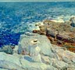

|  |
|
Childe Hassam |
American Impressionism: Treasures from the Smithsonian American Art Museum
August 20–October 29, 2000
Target Special Exhibitions Gallery
(Admission to be charged)
"American Impressionism" Opening Events
"American Impressionism: Treasures from the Smithsonian American Art Museum" will open to the public on August 20. The Institute is planning two very special events prior to the public opening for its members to celebrate this spectacular exhibition. Opening events offer Institute members the wonderful opportunity to view exhibitions of world-class art before they are available to the general public. Watch for your invitations in the mail.
Patrons’ Circle members are invited to a preview of "American Impressionism" on Wednesday, August 16 5:30–9 p.m. Join Director Evan M. Maurer and Patrick Noon, the museum’s Patrick and Aimee Butler Curator of Paintings, for cocktails, a light buffet, and commentary about this dazzling collection of nineteenth-century paintings. Invitations will be mailed.
Contributors’ Circle members ($200 through $1,499) will enjoy an elegant, private evening event on Thursday, August 17, from 6 to 9 P.M. They will enjoy light hors d’oeuvres, a cash bar and live music, and a quiet opportunity to view this beautiful collection of paintings by some of America’s premier Impressionist artists. This exclusive event is available to Contributor Circle members only.
General members ($35 through $199) will also enjoy a private evening with these paintings on Saturday, August 19, from 7 to 11 P.M. General members will also enjoy refreshments, cash bars and live music.
An exclusive two-day members’ preview will allow Institute members to use their tickets to see "American Impressionism" before it opens to the public. On Friday, August 18, from 10 a.m. to 9 p.m., and Saturday, August 19, from 10 a.m. to 5 p.m., members only will be admitted to the exhibition. Join on the spot for this special preview! Tickets are required. Call (612) 870-6323 to reserve.